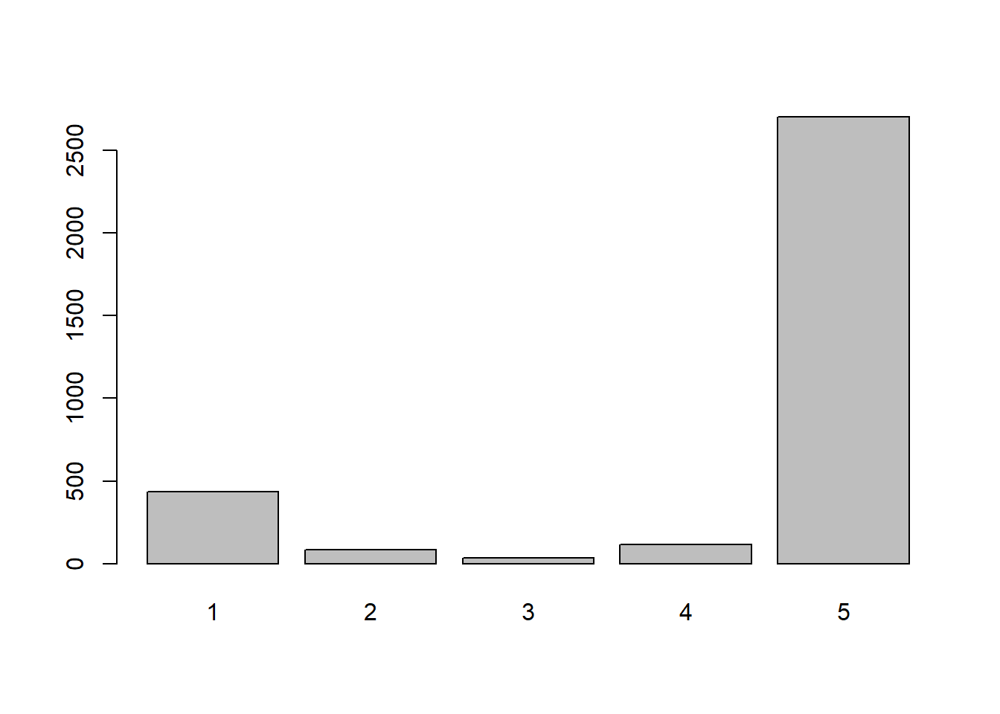
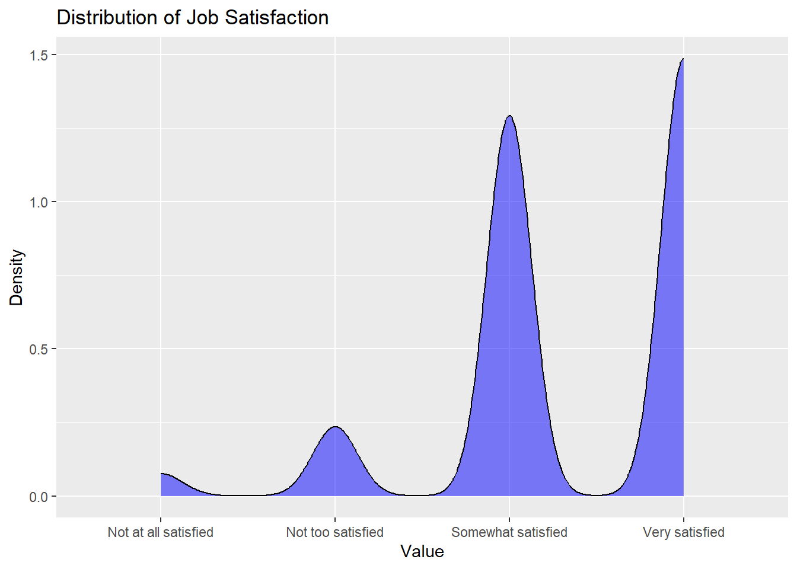
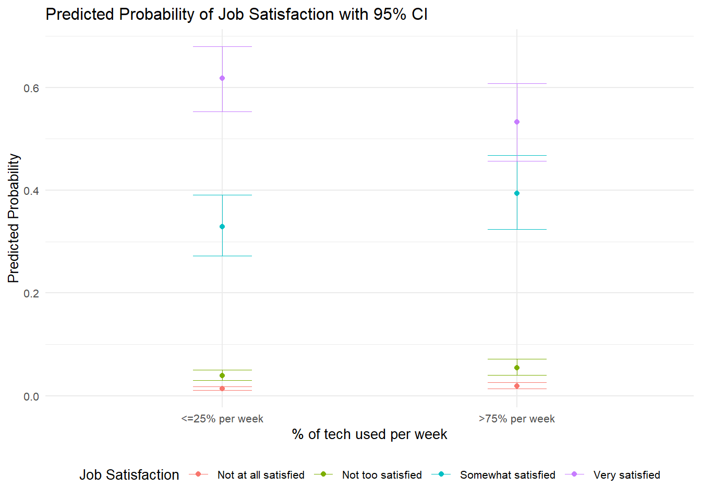
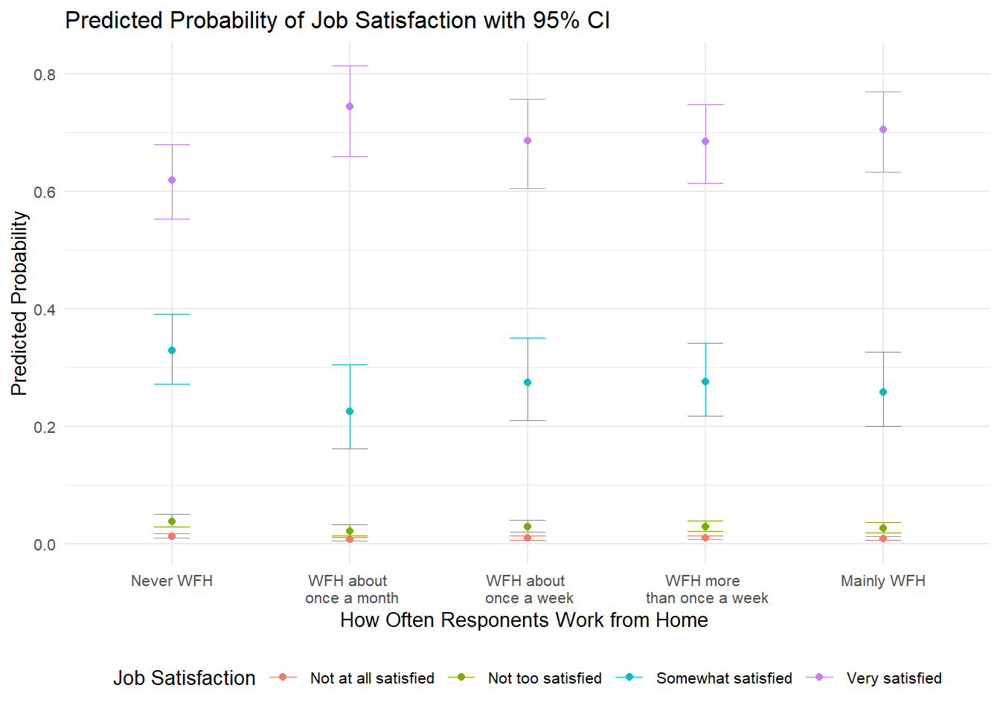
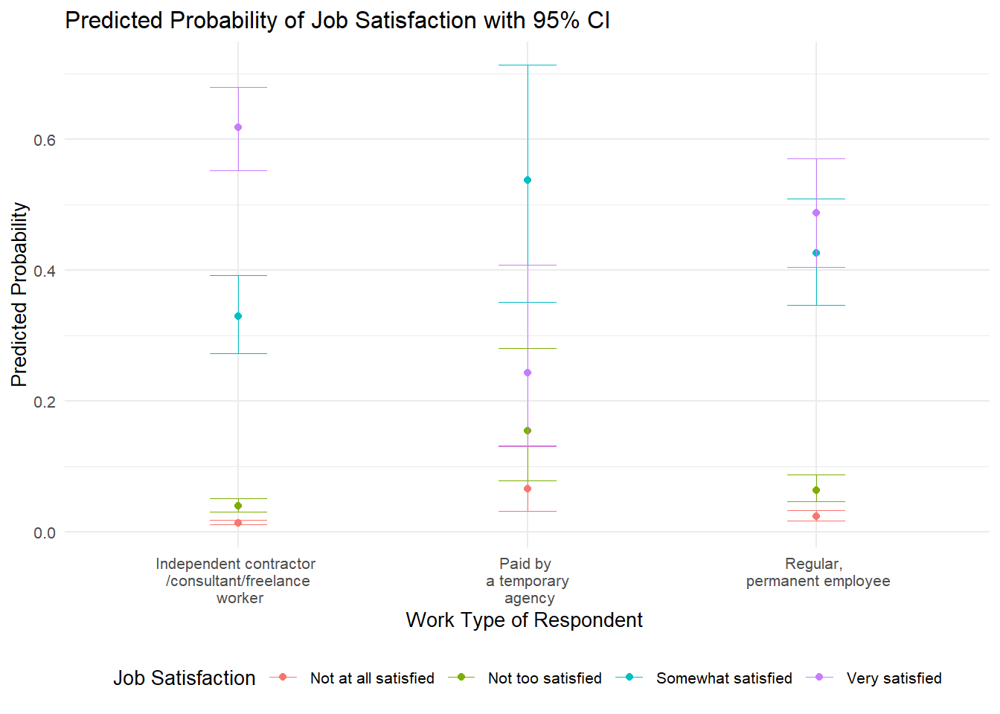

Code
GSS_18<- read_dta("_data/GSS2018.dta")
GSS_22<- read_dta("_data/GSS2022.dta")Nayan Jani
January 8, 2024
Here I renamed the different weight columns to ‘weights’ so that I could combine the datasets
Combine datasets using rbind() and named it GSS
Here I recoded all my variables with new names. I flipped the scale of satjob1 so that the negative responses were coded as lower values and the positive responses were coded as higher values. Age_group, years_job, POC, and use_tech all had to be collapsed into smaller groups in order to run analysis. All binary variables were coded as 0/1. Work_type was coded as a categorical variable.
# A tibble: 5 × 3
satjob1 n percent
<dbl+lbl> <int> <chr>
1 1 [very satisfied] 1616 27.4%
2 2 [somewhat satisfied] 1406 23.9%
3 3 [not too satisfied] 256 4.3%
4 4 [not at all satisfied] 82 1.4%
5 NA(i) [iap] 2532 43.0% # A tibble: 5 × 3
job_sat n percent
<dbl> <int> <chr>
1 1 82 1.4%
2 2 256 4.3%
3 3 1406 23.9%
4 4 1616 27.4%
5 NA 2532 43.0% GSS <- GSS %>%
mutate(wrkhome = case_when(
wrkhome ==1 ~ 1,
wrkhome ==2 ~ 2,
wrkhome ==3 ~ 3,
wrkhome ==4 ~ 4,
wrkhome ==5 ~ 5,
wrkhome ==6 ~ 6,
wrkhome < 0 ~ NA_real_))
GSS <- GSS %>%
mutate(degree = case_when(
degree ==0 ~ 1,
degree ==1 ~ 2,
degree ==2 ~ 3,
degree ==3 ~ 4,
degree ==4 ~ 5,
degree < 0 ~ NA_real_))
GSS <- GSS %>%
mutate(post_covid = case_when(
year ==2018 ~ 0,
year ==2022 ~ 1,
year < 0 ~ NA_real_))
GSS<- GSS %>%
mutate(use_tech = case_when(
usetech >= 0 & usetech <= 25 ~ 1,
usetech > 25 & usetech <= 50 ~ 2,
usetech > 50 & usetech <= 75 ~ 3,
usetech > 75 ~ 4,
))
GSS %>%
count(age) %>%
mutate(percent = scales::percent(n / sum(n)))# A tibble: 73 × 3
age n percent
<dbl+lbl> <int> <chr>
1 18 44 0.747%
2 19 55 0.933%
3 20 63 1.069%
4 21 73 1.239%
5 22 86 1.460%
6 23 82 1.392%
7 24 83 1.409%
8 25 88 1.494%
9 26 89 1.511%
10 27 85 1.443%
# … with 63 more rowsGSS <- GSS %>%
mutate(age = replace(age, age <= -1, NA))
age_breaks <- c(18, 30, 40, 50, 65, 100)
# Create a new variable with age groups
GSS$age_group <- cut(GSS$age,
age_breaks, labels = c(1, 2, 3, 4, 5),
include.lowest = TRUE)
GSS <- GSS %>%
mutate(female = case_when(
sex ==1 ~ 0,
sex ==2 ~ 1,
sex <=-1 ~ NA_real_))
GSS %>%
count(wrktype) %>%
mutate(percent = scales::percent(n / sum(n)))# A tibble: 6 × 3
wrktype n percent
<dbl+lbl> <int> <chr>
1 1 [independent contractor/consultant/freelance worker] 434 7.37%
2 2 [on-call, work only when called to work] 82 1.39%
3 3 [paid by a temporary agency] 35 0.59%
4 4 [work for contractor who provides workers/services] 115 1.95%
5 5 [regular, permanent employee] 2704 45.89%
6 NA(i) [iap] 2522 42.80% 
work arrangement at main job
Frequency Percent Valid Percent
1 434 7.366 12.878
2 82 1.392 2.433
3 35 0.594 1.039
4 115 1.952 3.412
5 2704 45.893 80.237
NA's 2522 42.804
Total 5892 100.000 100.000value_labels <- c("Independent contractor/consultant/freelance worker", "On-call, work only when called to work",
"Paid by a temporary agency", "Work for contractor who provides workers/services",
"Regular, permanent employee")
# Assign value labels to the Response variable
GSS$work_type <- factor(GSS$work_type, levels = 1:5, labels = value_labels)
GSS %>%
count(race) %>%
mutate(percent = scales::percent(n / sum(n)))# A tibble: 4 × 3
race n percent
<dbl+lbl> <int> <chr>
1 1 [white] 4207 71.4%
2 2 [black] 950 16.1%
3 3 [other] 682 11.6%
4 NA(i) [iap] 53 0.9% GSS <- GSS %>%
mutate(poc = case_when(
race==1 ~ 0,
race == 2 | race == 3 ~ 1,
race <=-1 ~ NA_real_))
GSS<- GSS %>%
mutate(years_job = case_when(
yearsjob >= 0 & yearsjob <= 1.0 ~ 1,
yearsjob > 1.0 & yearsjob <= 4 ~ 2,
yearsjob > 4 ~ 3,
))
GSS %>%
count(years_job) %>%
mutate(percent = scales::percent(n / sum(n)))# A tibble: 4 × 3
years_job n percent
<dbl> <int> <chr>
1 1 1017 17.3%
2 2 802 13.6%
3 3 1556 26.4%
4 NA 2517 42.7% Here is a graph of the distribution of my DV.
Warning: Removed 2532 rows containing non-finite values (`stat_density()`).
Graph suggested that an ordered model would be most appropriate for my models.
Work type is a grouping variable, so I checked to see if there is a nested data structure.
Linear mixed model fit by REML ['lmerMod']
Formula: job_sat ~ 1 + (1 | wrktype)
Data: GSS
Weights: weights
REML criterion at convergence: 8212
Scaled residuals:
Min 1Q Median 3Q Max
-12.1296 -0.4674 -0.2270 0.7235 2.7186
Random effects:
Groups Name Variance Std.Dev.
wrktype (Intercept) 0.02348 0.1532
Residual 0.52486 0.7245
Number of obs: 3321, groups: wrktype, 5
Fixed effects:
Estimate Std. Error t value
(Intercept) 3.39041 0.07508 45.16[1] 0.04282015ICC < .1 indicates that there is not multilevel data structure within my dataset.
First, job_sat must be set as an ordered factor so that ordered logistic regression can be run. post_covid has to be set as a factor in order to run the interaction model. Use_tech_f and wrkhome_f are factor versions of use_tech and wrkhome. I set them to factors to investigate if they have a linear relationship with job satisfaction. Age_group is set as a numeric because it is a control variable. Finally I filter out any NAs again to ensure that all my data instances are clean.
Warning in eval(family$initialize): non-integer #successes in a binomial glm!
======================================================================================
Dependent variable:
---------------------------
job_sat
--------------------------------------------------------------------------------------
use_tech_f2 -0.17*
(0.10)
use_tech_f3 0.01
(0.12)
use_tech_f4 -0.37***
(0.09)
wrkhome 0.07***
(0.02)
post_covid1 -0.06
(0.07)
female -0.05
(0.07)
poc -0.15*
(0.08)
age_group 0.22***
(0.03)
work_typeOn-call, work only when called to work -0.20
(0.24)
work_typePaid by a temporary agency -1.63***
(0.36)
work_typeWork for contractor who provides workers/services -0.33
(0.22)
work_typeRegular, permanent employee -0.55***
(0.11)
years_job -0.09**
(0.04)
--------------------------------------------------------------------------------------
Observations 3,268
======================================================================================
Note: *p<0.1; **p<0.05; ***p<0.01The non linear relationship suggests that use_tech should be coded as a factor.
Non linear relationship suggests that wrkhome should be coded as a factor.
Warning in eval(family$initialize): non-integer #successes in a binomial glm!
======================================================================================
Dependent variable:
---------------------------
job_sat
--------------------------------------------------------------------------------------
use_tech -0.12***
(0.03)
wrkhome_f2 0.13
(0.14)
wrkhome_f3 0.54***
(0.16)
wrkhome_f4 0.26*
(0.14)
wrkhome_f5 0.27**
(0.11)
wrkhome_f6 0.33***
(0.12)
post_covid1 -0.05
(0.07)
female -0.03
(0.07)
poc -0.14*
(0.08)
age_group 0.22***
(0.03)
work_typeOn-call, work only when called to work -0.18
(0.24)
work_typePaid by a temporary agency -1.62***
(0.36)
work_typeWork for contractor who provides workers/services -0.35
(0.22)
work_typeRegular, permanent employee -0.55***
(0.11)
years_job -0.10**
(0.04)
--------------------------------------------------------------------------------------
Observations 3,268
======================================================================================
Note: *p<0.1; **p<0.05; ***p<0.01The non linear relationship suggests that wrkhome should be coded as a factor.
1: People who work mainly from home are more satisfied with their job than those who never work from home. 2: Working from home became more influential at making people more satisfied with their job post covid than pre covid. 3: In 2022, the working population is more satisfied with their jobs than they were in 2018. 4: People who are using technology for more than 75% of their total work time during a week are less satisfied with their jobs than others. 5: In post COVID times, using technology is related to lower job satisfaction than pre-COVID.
Here I change to weights to type as.double() and run my final models.
Warning in eval(family$initialize): non-integer #successes in a binomial glm!Warning in eval(family$initialize): non-integer #successes in a binomial glm!Here I display my results of my main effect model and interaction effect model side by side using msummary(). I renamed all the coefficients to the correct labels. I include stars = TRUE to display the significance level of each variable.
msummary(list("Main Effect" = js_l,
"Interaction" = js_l_int),
coef_rename = c("use_tech_f2" = "Uses tech 26-50% per week",
"use_tech_f3" = "Uses tech 51-75% per week",
"use_tech_f4" = "Uses tech >75% per week",
"wrkhome_f2" = "WFH few times a year",
"wrkhome_f3" = "WFH about once a month",
"wrkhome_f4" = "WFH about once a week",
"wrkhome_f5" = "WFH more than once a week",
"wrkhome_f6" = "Mainly WFH",
"post_covid1" = "2022",
"female" = "Female",
"poc" = "POC",
"age_group" = "Age group",
"work_typeOn-call, work only when called to work" = "On-call, work only when called to work",
"work_typePaid by a temporary agency" = "Paid by a temporary agency",
"work_typeWork for contractor who provides workers/services" =
"Work for contractor who provides workers/services",
"work_typeRegular, permanent employee" = "Regular, permanent employee",
"years_job" = "Years worked at current job",
"degree" = "Education Level",
"use_tech_f2 × post_covid1" = "Uses tech 26-50% per week X 2022",
"use_tech_f3 × post_covid1" = "Uses tech 51-75% per week X 2022",
"use_tech_f4 × post_covid1" = "Uses tech >75% per week X 2022",
"wrkhome_f2 × post_covid1" = "WFH few times a year X 2022",
"wrkhome_f3 × post_covid1" = "WFH about once a month X 2022",
"wrkhome_f4 × post_covid1" = "WFH about once a week X 2022",
"wrkhome_f5 × post_covid" = "WFH more than once a week X 2022",
"wrkhome_f6 × post_covid" = "Mainly WFH X 2022"), stars = TRUE)| Main Effect | Interaction | |
|---|---|---|
| 1|2 | −4.080*** | −4.031*** |
| (0.201) | (0.212) | |
| 2|3 | −2.694*** | −2.645*** |
| (0.177) | (0.190) | |
| 3|4 | −0.291+ | −0.239 |
| (0.169) | (0.183) | |
| Uses tech 26-50% per week | −0.169 | −0.235 |
| (0.105) | (0.156) | |
| Uses tech 51-75% per week | 0.035 | 0.062 |
| (0.127) | (0.186) | |
| Uses tech >75% per week | −0.350*** | −0.241+ |
| (0.091) | (0.131) | |
| WFH few times a year | 0.158 | 0.167 |
| (0.146) | (0.213) | |
| WFH about once a month | 0.584*** | 0.470* |
| (0.167) | (0.222) | |
| WFH about once a week | 0.297* | 0.464* |
| (0.139) | (0.192) | |
| WFH more than once a week | 0.291* | 0.403* |
| (0.114) | (0.175) | |
| Mainly WFH | 0.390** | 0.328 |
| (0.123) | (0.230) | |
| 2022 | −0.050 | 0.035 |
| (0.070) | (0.131) | |
| Female | −0.029 | −0.027 |
| (0.070) | (0.070) | |
| POC | −0.144+ | −0.145+ |
| (0.079) | (0.079) | |
| Age group | 0.223*** | 0.225*** |
| (0.032) | (0.032) | |
| On-call, work only when called to work | −0.191 | −0.188 |
| (0.243) | (0.244) | |
| Paid by a temporary agency | −1.618*** | −1.628*** |
| (0.364) | (0.365) | |
| Work for contractor who provides workers/services | −0.343 | −0.347 |
| (0.221) | (0.222) | |
| Regular, permanent employee | −0.533*** | −0.529*** |
| (0.112) | (0.113) | |
| Years worked at current job | −0.094* | −0.098* |
| (0.044) | (0.044) | |
| Education Level | −0.052+ | −0.053+ |
| (0.032) | (0.032) | |
| Uses tech 26-50% per week:2022 | 0.124 | |
| (0.209) | ||
| Uses tech 51-75% per week:2022 | −0.027 | |
| (0.250) | ||
| Uses tech >75% per week:2022 | −0.191 | |
| (0.175) | ||
| WFH few times a year:2022 | −0.027 | |
| (0.289) | ||
| WFH about once a month:2022 | 0.224 | |
| (0.333) | ||
| WFH about once a week:2022 | −0.353 | |
| (0.272) | ||
| WFH more than once a week:2022 | −0.167 | |
| (0.225) | ||
| Mainly WFH:2022 | 0.109 | |
| (0.266) | ||
| Num.Obs. | 3268 | 3268 |
| AIC | 6323.9 | 6334.1 |
| BIC | 6451.8 | 6510.8 |
| RMSE | 3.20 | 3.20 |
| + p < 0.1, * p < 0.05, ** p < 0.01, *** p < 0.001 |
Main Effect model: Based on the model results, there is evidence that supports Hypothesis 1. Survey respondents who WFH about once a month (0.584 log odds) , WFH about once a week (0.297 log odds), WFH more than once a week (0.291 log odds), and Mainly WFH (0.390 log odds) are all significantly more likely (p < 0.05) to be satisfied with their jobs than survey respondents who never WFH. Additionally, there is evidence from the model results that supports Hypothesis 4. Survey respondents who use technology more than 75% of their total work time per week (−0.350 log odds) are significantly less likely (p <0.05) to be satisfied with their jobs than those who use technology less than 25% of their total work time per week. Hypothesis 3 is not supported based on the model results as ‘2022’ is not statistically different from 0 (−0.050 log odds , 0.70 SE). Interestingly, survey respondents who are Paid by a temporary agency (−0.533 log odds) or Regular, permanent employees (−1.618 log odds) are significantly less likely to be satisfied with their jobs than those who are Independent contractors. Other control variables that are statistically different from 0 at p < 0.05 include age group and Years worked at current job.
Interaction model: Unfortunately, there is insufficient evidence that supports Hypotheses #2 and #5 as none of the interactions between working from home, the % of time using technology in a work week, and year (pre and post covid) are statistically different from 0 at p < 0.05.
I filtered out all non significant levels of use_tech. I also display the legend at the bottom of the graph for spacing purposes.
custom_levels <- c(1, 2, 3, 4)
custom_labels <- c("Not at all satisfied", "Not too satisfied", "Somewhat satisfied", "Very satisfied")
# Reassign variable with custom labels
logit$response.level <- factor(logit$response.level, levels = custom_levels, labels = custom_labels)
logit1 <- logit %>%
filter(logit$x %in% c(1, 4))
#Filters for the variables we nee
custom_order1 <- c('<=25% per week','>75% per week')
ggplot(logit1, aes(x = x, y = predicted, color = response.level, group = response.level)) +
geom_point() + theme_minimal(base_size = 10) +
labs(x = "% of tech used per week", y = "Predicted Probability",
title = "Predicted Probability of Job Satisfaction with 95% CI") +
labs(color = "Job Satisfaction") +
geom_errorbar(aes(ymin=conf.low, ymax=conf.high),
linewidth=.3, # Thinner lines
width=.2) + scale_x_discrete(labels = custom_order1) + theme(legend.position = "bottom")
Figure 1: Predicted probabilities of the reference and significant levels of % of tech used per week during work
Figure 1 shows that survey respondents who use technology more than 75% of their total work time per week have a lower predicted probability of being very satisfied with their job (~55% probability of being very satisfied) than those who use technology less than 25% of their total work time per week (~ 62% probability of being very satisfied). The reason for this could be similar to the conclusion found in the literature review about technology: the increased amount of information workers have to deal with due to using more technology is much harder to handle than workers who do not use as much technology in the workplace.
I filtered out all non significant levels of wrkhome. I also display the legend at the bottom of the graph for spacing purposes.
logitW<-ggpredict(js_l, terms="wrkhome_f")
logitW$response.level <- factor(logitW$response.level, levels = custom_levels, labels = custom_labels)
logitW1 <- logitW %>%
filter(logitW$x %in% c(1,3,4,5,6))
custom_order2 <- c('Never WFH','WFH about \n once a month', 'WFH about \n once a week',
'WFH more \n than once a week', 'Mainly WFH' )
ggplot(logitW1, aes(x = x, y = predicted, color = response.level, group = response.level)) +
geom_point() + theme_minimal(base_size = 10) +
labs(x = "How Often Responents Work from Home ", y = "Predicted Probability",
title = "Predicted Probability of Job Satisfaction with 95% CI") +
labs(color = "Job Satisfaction") +
geom_errorbar(aes(ymin=conf.low, ymax=conf.high),
linewidth=.3, # Thinner lines
width=.2) + scale_x_discrete(labels = custom_order2) + theme(legend.position = "bottom")
Figure 2: Predicted probabilities of the reference and significant levels of how often respondents work from home
Figure 2 shows that the survey respondents who Never WFH have a lower predicted probability of being very satisfied with their job (~ 60% probability of being very satisfied) than those who mainly WFH (~70% probability of being very satisfied). The reason for why this is the case could be that workers feel more comfortable in an at home work environment and favor the flexibility of working from home over working in person.
logitWT<-ggpredict(js_l, terms="work_type")
logitWT$response.level <- factor(logitWT$response.level, levels = custom_levels, labels = custom_labels)
logitWT2 <- logitWT %>%
filter(logitWT$x %in% c('Independent contractor/consultant/freelance worker','Paid by a temporary agency','Regular, permanent employee'))
#custom_order3 <- c('Independent contractor \n /consultant/freelance \n worker',
# 'On-call, \n work only \n when called to work','Paid by \n a temporary \n agency',
# 'Work for contractor \n who provides \n workers/services',
# 'Regular, \n permanent employee' )
custom_order3 <- c('Independent contractor \n /consultant/freelance \n worker',
'Paid by \n a temporary \n agency',
'Regular, \n permanent employee' )
ggplot(logitWT2, aes(x = x, y = predicted, color = response.level, group = response.level)) +
geom_point() + theme_minimal(base_size = 10) +
labs(x = "Work Type of Respondent ", y = "Predicted Probability",
title = "Predicted Probability of Job Satisfaction with 95% CI") +
labs(color = "Job Satisfaction") +
geom_errorbar(aes(ymin=conf.low, ymax=conf.high),
linewidth=.3, # Thinner lines
width=.2) + scale_x_discrete(labels = custom_order3) + theme(legend.position = "bottom")
Figure 3: Predicted probabilities of the reference and significant levels of work type of respondent
Figure 3 shows the survey respondents who are Independent contractor/consultant/ freelance workers have a much higher predicted probability of being very satisfied with their job (~62% probability of being very satisfied) than survey respondents who are Paid by a temporary agency (~25% probability of being very satisfied) and regular, permanent employees (~ 50% probability of being very satisfied). The reason Independent contractor/consultant/ freelance workers have a greater chance of being very satisfied with jobs could be because of how flexible their jobs are. Although their job security may not be as safe as other types of work arrangements, Independent contractor/consultant/ freelance workers are tasked with work that they excel and are interested in, which leads towards the belief that they are more satisfied with their jobs than the other significant work arrangements.
---
title: "U.S. Job Satisfaction: Impacts of Tech, Remote Work & Covid"
author: "Nayan Jani"
desription: "Advanced Quant project"
date: "01/08/2024"
format:
html:
toc: true
code-fold: true
code-copy: true
code-tools: true
categories:
- Job Satisfaction
- Advanced Quant
---
```{r setup, include=FALSE}
knitr::opts_chunk$set(echo = TRUE)
library(haven) #Imports stata file
library(skimr) #For data evaluation
library(psych) #For exploratory factor analysis
library(corrplot) #To graph correlations
library(lavaan) #For confirmatory factor analysis
library(semPlot)
library(survey)
library(Hmisc)
library(stats)
library(tidyverse)
library(poliscidata)
library(descr)
library(GPArotation)
library(tinytex)
library(descr)
library(ggplot2)
library(stargazer)
library(lmtest)
library(sandwich)
library(modelsummary)
library(lme4)
library(ggeffects)
library(janitor)
library(sjstats)
library(influence.ME)
library(arm)
library(MASS)
library(brant)
```
## Read in data
```{r cars}
GSS_18<- read_dta("_data/GSS2018.dta")
GSS_22<- read_dta("_data/GSS2022.dta")
```
## Selecting variables to use
Here I renamed the different weight columns to 'weights' so that I could combine the datasets
```{r pressure, echo=FALSE}
GSS_18<-GSS_18 %>%
dplyr::select(satjob1,wrkhome, year,usetech ,age, sex,wrktype,race, yearsjob,wtss, degree) %>%
rename(weights = "wtss")
GSS_22<-GSS_22 %>%
dplyr::select(satjob1,wrkhome, year,usetech ,age, sex,wrktype,race, yearsjob,wtssps,degree) %>%
rename(weights = "wtssps")
```
Combine datasets using rbind() and named it GSS
```{r}
GSS <-rbind(GSS_18,GSS_22)
```
## Recoding variables and removing NAs
Here I recoded all my variables with new names. I flipped the scale of satjob1 so that the negative responses were coded as lower values and the positive responses were coded as higher values. Age_group, years_job, POC, and use_tech all had to be collapsed into smaller groups in order to run analysis. All binary variables were coded as 0/1. Work_type was coded as a categorical variable.
```{r}
GSS %>%
count(satjob1) %>%
mutate(percent = scales::percent(n / sum(n)))
GSS <- GSS %>%
mutate(job_sat = case_when(
satjob1 ==1 ~ 4,
satjob1 ==2 ~ 3,
satjob1 ==3 ~ 2,
satjob1 ==4 ~ 1,
satjob1 < 0 ~ NA_real_))
GSS %>%
count(job_sat) %>%
mutate(percent = scales::percent(n / sum(n)))
GSS <- GSS %>%
mutate(wrkhome = case_when(
wrkhome ==1 ~ 1,
wrkhome ==2 ~ 2,
wrkhome ==3 ~ 3,
wrkhome ==4 ~ 4,
wrkhome ==5 ~ 5,
wrkhome ==6 ~ 6,
wrkhome < 0 ~ NA_real_))
GSS <- GSS %>%
mutate(degree = case_when(
degree ==0 ~ 1,
degree ==1 ~ 2,
degree ==2 ~ 3,
degree ==3 ~ 4,
degree ==4 ~ 5,
degree < 0 ~ NA_real_))
GSS <- GSS %>%
mutate(post_covid = case_when(
year ==2018 ~ 0,
year ==2022 ~ 1,
year < 0 ~ NA_real_))
GSS<- GSS %>%
mutate(use_tech = case_when(
usetech >= 0 & usetech <= 25 ~ 1,
usetech > 25 & usetech <= 50 ~ 2,
usetech > 50 & usetech <= 75 ~ 3,
usetech > 75 ~ 4,
))
GSS %>%
count(age) %>%
mutate(percent = scales::percent(n / sum(n)))
GSS <- GSS %>%
mutate(age = replace(age, age <= -1, NA))
age_breaks <- c(18, 30, 40, 50, 65, 100)
# Create a new variable with age groups
GSS$age_group <- cut(GSS$age,
age_breaks, labels = c(1, 2, 3, 4, 5),
include.lowest = TRUE)
GSS <- GSS %>%
mutate(female = case_when(
sex ==1 ~ 0,
sex ==2 ~ 1,
sex <=-1 ~ NA_real_))
GSS %>%
count(wrktype) %>%
mutate(percent = scales::percent(n / sum(n)))
GSS <- GSS %>%
mutate(work_type = replace(wrktype, (wrktype <= -1 | wrktype >= 99), NA))
freq(GSS$work_type)
value_labels <- c("Independent contractor/consultant/freelance worker", "On-call, work only when called to work",
"Paid by a temporary agency", "Work for contractor who provides workers/services",
"Regular, permanent employee")
# Assign value labels to the Response variable
GSS$work_type <- factor(GSS$work_type, levels = 1:5, labels = value_labels)
GSS %>%
count(race) %>%
mutate(percent = scales::percent(n / sum(n)))
GSS <- GSS %>%
mutate(poc = case_when(
race==1 ~ 0,
race == 2 | race == 3 ~ 1,
race <=-1 ~ NA_real_))
GSS<- GSS %>%
mutate(years_job = case_when(
yearsjob >= 0 & yearsjob <= 1.0 ~ 1,
yearsjob > 1.0 & yearsjob <= 4 ~ 2,
yearsjob > 4 ~ 3,
))
GSS %>%
count(years_job) %>%
mutate(percent = scales::percent(n / sum(n)))
```
## DV distribution
Here is a graph of the distribution of my DV.
```{r, message=FALSE}
custom_order <- c('Not at all satisfied', 'Not too satisfied', 'Somewhat satisfied', 'Very satisfied')
ggplot(GSS, aes(x = job_sat)) +
geom_density(fill = "blue", alpha = 0.5) +
labs(x = "Value", y = "Density", title = "Distribution of Job Satisfaction") +
scale_x_discrete(limits = custom_order)
```
Graph suggested that an ordered model would be most appropriate for my models.
## Check to see if there is a nested data structure based on the grouping variable
Work type is a grouping variable, so I checked to see if there is a nested data structure.
```{r, message=FALSE}
GSS$wrktype <- as.character(GSS$wrktype)
mlm <- lmer(job_sat ~ 1 + (1|wrktype), data = GSS, weights = weights)
summary(mlm)
icc <- 0.02348/(0.02348 +0.52486)
print(icc)
```
ICC < .1 indicates that there is not multilevel data structure within my dataset.
## Changing the data types for important variables
First, job_sat must be set as an ordered factor so that ordered logistic regression can be run. post_covid has to be set as a factor in order to run the interaction model. Use_tech_f and wrkhome_f are factor versions of use_tech and wrkhome. I set them to factors to investigate if they have a linear relationship with job satisfaction. Age_group is set as a numeric because it is a control variable. Finally I filter out any NAs again to ensure that all my data instances are clean.
```{r, message=FALSE}
GSS$job_sat <- factor(GSS$job_sat, ordered = TRUE)
GSS$post_covid <- factor(GSS$post_covid)
GSS$use_tech_f <- factor(GSS$use_tech)
GSS$wrkhome_f <- factor(GSS$wrkhome)
GSS$age_group <- as.numeric(GSS$age_group)
GSS <- GSS %>%
filter(complete.cases(.))
```
## Check to see if use_tech is linear
```{r, message=FALSE}
js_l<-polr(job_sat ~ use_tech_f + wrkhome + post_covid + female + poc + age_group + work_type + years_job, data=GSS, na.action = na.exclude, method = "logistic", weights= weights )
stargazer(js_l, type="text",
digits=2)
```
The non linear relationship suggests that use_tech should be coded as a factor.
## Check to see if wrkhome is linear
Non linear relationship suggests that wrkhome should be coded as a factor.
```{r}
js_l<-polr(job_sat ~ use_tech + wrkhome_f + post_covid + female + poc + age_group + work_type + years_job, data=GSS, na.action = na.exclude, method = "logistic", weights= weights )
stargazer(js_l, type="text",
digits=2)
```
The non linear relationship suggests that wrkhome should be coded as a factor.
## Hypotheses
1: People who work mainly from home are more satisfied with their job than those who never work from home.
2: Working from home became more influential at making people more satisfied with their job post covid than pre covid.
3: In 2022, the working population is more satisfied with their jobs than they were in 2018.
4: People who are using technology for more than 75% of their total work time during a week are less satisfied with their jobs than others.
5: In post COVID times, using technology is related to lower job satisfaction than pre-COVID.
## Final Models
Here I change to weights to type as.double() and run my final models.
```{r, message=FALSE}
GSS$weights <- as.double(GSS$weights)
js_l <- polr(job_sat ~ use_tech_f + wrkhome_f + post_covid + female + poc + age_group + work_type + years_job +degree, data=GSS, na.action = na.exclude, method = "logistic", weights= weights )
js_l_int<-polr(job_sat ~ use_tech_f + wrkhome_f + post_covid +use_tech_f:post_covid + wrkhome_f:post_covid + female + poc + age_group + work_type + years_job + degree, data=GSS, na.action = na.exclude, method = "logistic", weights= weights )
```
## Display results
Here I display my results of my main effect model and interaction effect model side by side using msummary(). I renamed all the coefficients to the correct labels. I include stars = TRUE to display the significance level of each variable.
```{r}
msummary(list("Main Effect" = js_l,
"Interaction" = js_l_int),
coef_rename = c("use_tech_f2" = "Uses tech 26-50% per week",
"use_tech_f3" = "Uses tech 51-75% per week",
"use_tech_f4" = "Uses tech >75% per week",
"wrkhome_f2" = "WFH few times a year",
"wrkhome_f3" = "WFH about once a month",
"wrkhome_f4" = "WFH about once a week",
"wrkhome_f5" = "WFH more than once a week",
"wrkhome_f6" = "Mainly WFH",
"post_covid1" = "2022",
"female" = "Female",
"poc" = "POC",
"age_group" = "Age group",
"work_typeOn-call, work only when called to work" = "On-call, work only when called to work",
"work_typePaid by a temporary agency" = "Paid by a temporary agency",
"work_typeWork for contractor who provides workers/services" =
"Work for contractor who provides workers/services",
"work_typeRegular, permanent employee" = "Regular, permanent employee",
"years_job" = "Years worked at current job",
"degree" = "Education Level",
"use_tech_f2 × post_covid1" = "Uses tech 26-50% per week X 2022",
"use_tech_f3 × post_covid1" = "Uses tech 51-75% per week X 2022",
"use_tech_f4 × post_covid1" = "Uses tech >75% per week X 2022",
"wrkhome_f2 × post_covid1" = "WFH few times a year X 2022",
"wrkhome_f3 × post_covid1" = "WFH about once a month X 2022",
"wrkhome_f4 × post_covid1" = "WFH about once a week X 2022",
"wrkhome_f5 × post_covid" = "WFH more than once a week X 2022",
"wrkhome_f6 × post_covid" = "Mainly WFH X 2022"), stars = TRUE)
```
Main Effect model: Based on the model results, there is evidence that supports Hypothesis 1. Survey respondents who WFH about once a month (0.584 log odds) , WFH about once a week (0.297 log odds), WFH more than once a week (0.291 log odds), and Mainly WFH (0.390 log odds) are all significantly more likely (p < 0.05) to be satisfied with their jobs than survey respondents who never WFH. Additionally, there is evidence from the model results that supports Hypothesis 4. Survey respondents who use technology more than 75% of their total work time per week (−0.350 log odds) are significantly less likely (p <0.05) to be satisfied with their jobs than those who use technology less than 25% of their total work time per week. Hypothesis 3 is not supported based on the model results as ‘2022’ is not statistically different from 0 (−0.050 log odds , 0.70 SE). Interestingly, survey respondents who are Paid by a temporary agency (−0.533 log odds) or Regular, permanent employees (−1.618 log odds) are significantly less likely to be satisfied with their jobs than those who are Independent contractors. Other control variables that are statistically different from 0 at p < 0.05 include age group and Years worked at current job.
Interaction model: Unfortunately, there is insufficient evidence that supports Hypotheses #2 and #5 as none of the interactions between working from home, the % of time using technology in a work week, and year (pre and post covid) are statistically different from 0 at p < 0.05.
## Create predicted probabilites for use_tech
```{r}
logit<-ggpredict(js_l, terms="use_tech_f")
```
## Graph Predicted probabilities of use_tech
I filtered out all non significant levels of use_tech. I also display the legend at the bottom of the graph for spacing purposes.
```{r}
custom_levels <- c(1, 2, 3, 4)
custom_labels <- c("Not at all satisfied", "Not too satisfied", "Somewhat satisfied", "Very satisfied")
# Reassign variable with custom labels
logit$response.level <- factor(logit$response.level, levels = custom_levels, labels = custom_labels)
logit1 <- logit %>%
filter(logit$x %in% c(1, 4))
#Filters for the variables we nee
custom_order1 <- c('<=25% per week','>75% per week')
ggplot(logit1, aes(x = x, y = predicted, color = response.level, group = response.level)) +
geom_point() + theme_minimal(base_size = 10) +
labs(x = "% of tech used per week", y = "Predicted Probability",
title = "Predicted Probability of Job Satisfaction with 95% CI") +
labs(color = "Job Satisfaction") +
geom_errorbar(aes(ymin=conf.low, ymax=conf.high),
linewidth=.3, # Thinner lines
width=.2) + scale_x_discrete(labels = custom_order1) + theme(legend.position = "bottom")
```
Figure 1: Predicted probabilities of the reference and significant levels of % of tech used per week during work
Figure 1 shows that survey respondents who use technology more than 75% of their total work time per week have a lower predicted probability of being very satisfied with their job (~55% probability of being very satisfied) than those who use technology less than 25% of their total work time per week (~ 62% probability of being very satisfied). The reason for this could be similar to the conclusion found in the literature review about technology: the increased amount of information workers have to deal with due to using more technology is much harder to handle than workers who do not use as much technology in the workplace.
## Graph Predicted probabilities of wrkhome
I filtered out all non significant levels of wrkhome. I also display the legend at the bottom of the graph for spacing purposes.
```{r}
logitW<-ggpredict(js_l, terms="wrkhome_f")
logitW$response.level <- factor(logitW$response.level, levels = custom_levels, labels = custom_labels)
logitW1 <- logitW %>%
filter(logitW$x %in% c(1,3,4,5,6))
custom_order2 <- c('Never WFH','WFH about \n once a month', 'WFH about \n once a week',
'WFH more \n than once a week', 'Mainly WFH' )
ggplot(logitW1, aes(x = x, y = predicted, color = response.level, group = response.level)) +
geom_point() + theme_minimal(base_size = 10) +
labs(x = "How Often Responents Work from Home ", y = "Predicted Probability",
title = "Predicted Probability of Job Satisfaction with 95% CI") +
labs(color = "Job Satisfaction") +
geom_errorbar(aes(ymin=conf.low, ymax=conf.high),
linewidth=.3, # Thinner lines
width=.2) + scale_x_discrete(labels = custom_order2) + theme(legend.position = "bottom")
```
Figure 2: Predicted probabilities of the reference and significant levels of how often respondents work from home
Figure 2 shows that the survey respondents who Never WFH have a lower predicted probability of being very satisfied with their job (~ 60% probability of being very satisfied) than those who mainly WFH (~70% probability of being very satisfied). The reason for why this is the case could be that workers feel more comfortable in an at home work environment and favor the flexibility of working from home over working in person.
```{r}
logitWT<-ggpredict(js_l, terms="work_type")
logitWT$response.level <- factor(logitWT$response.level, levels = custom_levels, labels = custom_labels)
logitWT2 <- logitWT %>%
filter(logitWT$x %in% c('Independent contractor/consultant/freelance worker','Paid by a temporary agency','Regular, permanent employee'))
#custom_order3 <- c('Independent contractor \n /consultant/freelance \n worker',
# 'On-call, \n work only \n when called to work','Paid by \n a temporary \n agency',
# 'Work for contractor \n who provides \n workers/services',
# 'Regular, \n permanent employee' )
custom_order3 <- c('Independent contractor \n /consultant/freelance \n worker',
'Paid by \n a temporary \n agency',
'Regular, \n permanent employee' )
ggplot(logitWT2, aes(x = x, y = predicted, color = response.level, group = response.level)) +
geom_point() + theme_minimal(base_size = 10) +
labs(x = "Work Type of Respondent ", y = "Predicted Probability",
title = "Predicted Probability of Job Satisfaction with 95% CI") +
labs(color = "Job Satisfaction") +
geom_errorbar(aes(ymin=conf.low, ymax=conf.high),
linewidth=.3, # Thinner lines
width=.2) + scale_x_discrete(labels = custom_order3) + theme(legend.position = "bottom")
```
Figure 3: Predicted probabilities of the reference and significant levels of work type of respondent
Figure 3 shows the survey respondents who are Independent contractor/consultant/ freelance workers have a much higher predicted probability of being very satisfied with their job (~62% probability of being very satisfied) than survey respondents who are Paid by a temporary agency (~25% probability of being very satisfied) and regular, permanent employees (~ 50% probability of being very satisfied). The reason Independent contractor/consultant/ freelance workers have a greater chance of being very satisfied with jobs could be because of how flexible their jobs are. Although their job security may not be as safe as other types of work arrangements, Independent contractor/consultant/ freelance workers are tasked with work that they excel and are interested in, which leads towards the belief that they are more satisfied with their jobs than the other significant work arrangements.